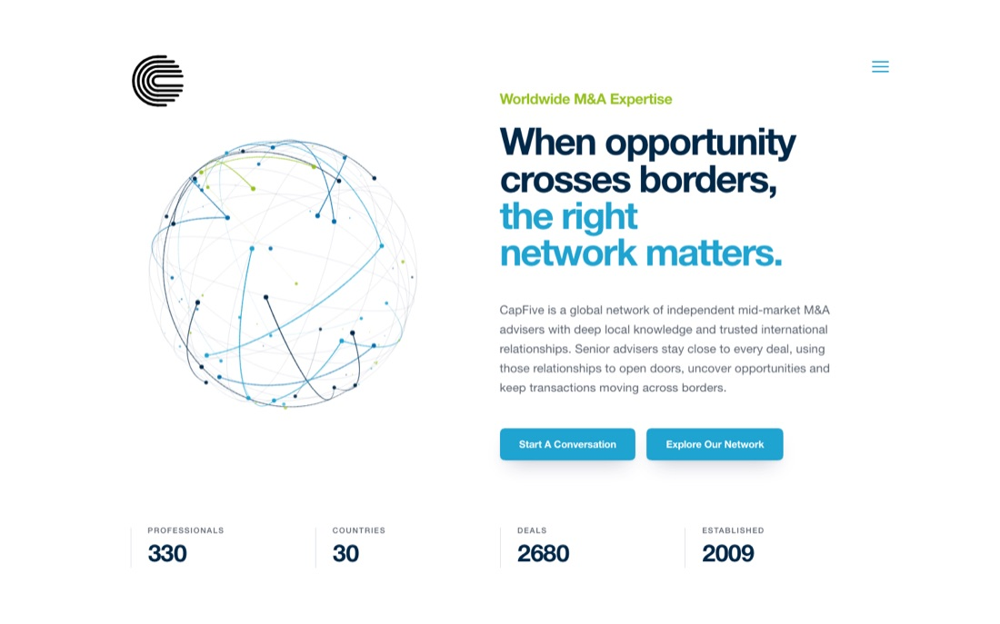
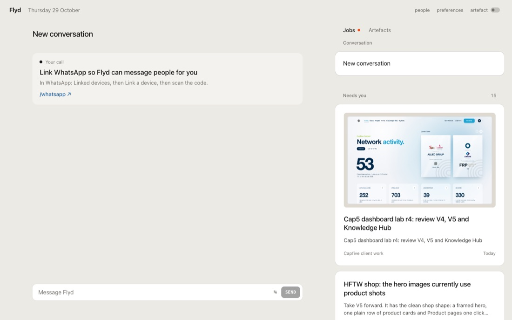
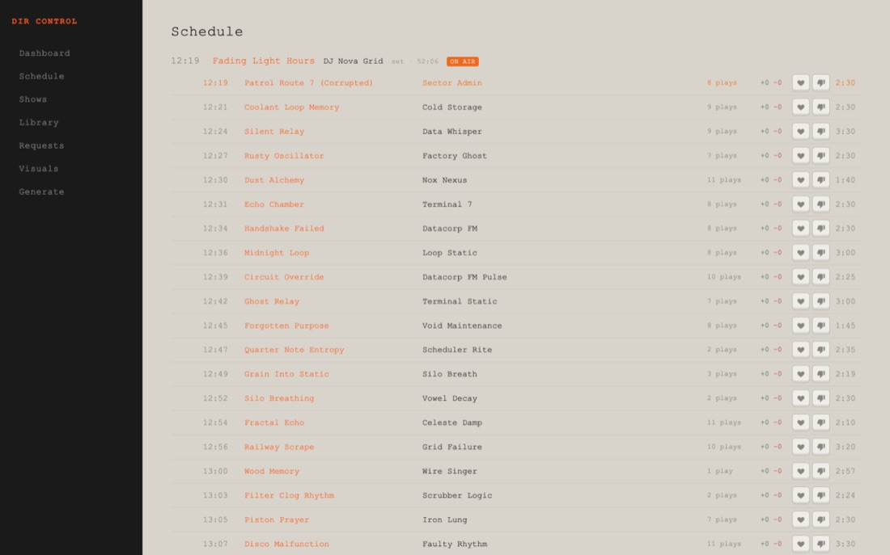
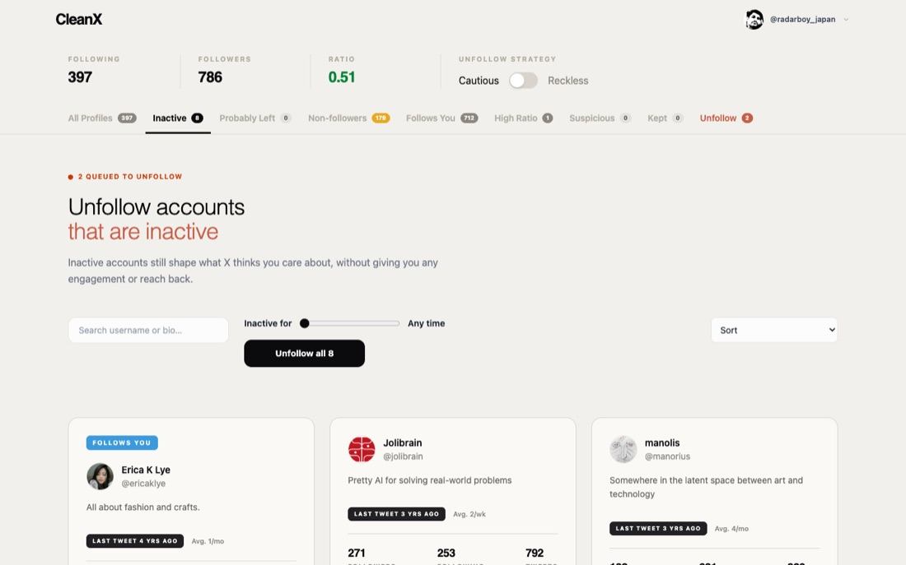
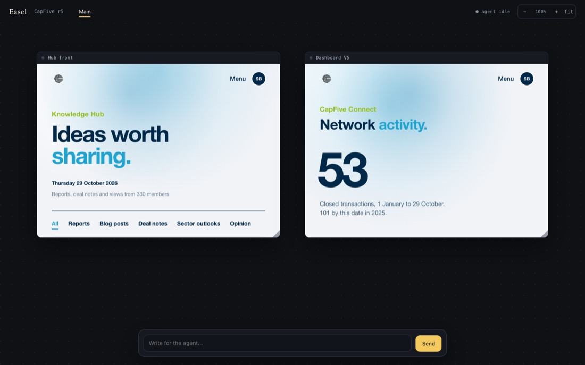
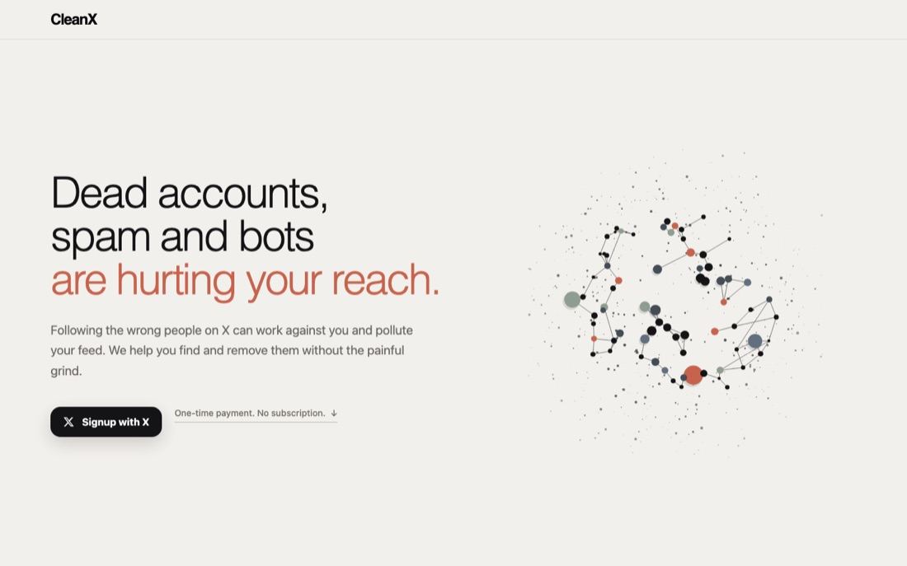
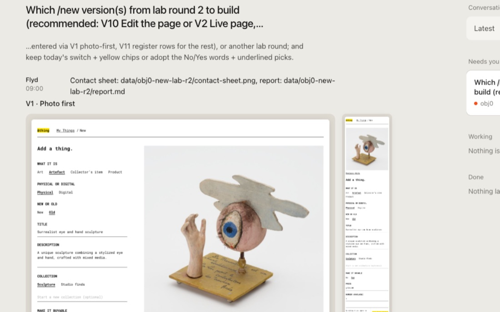
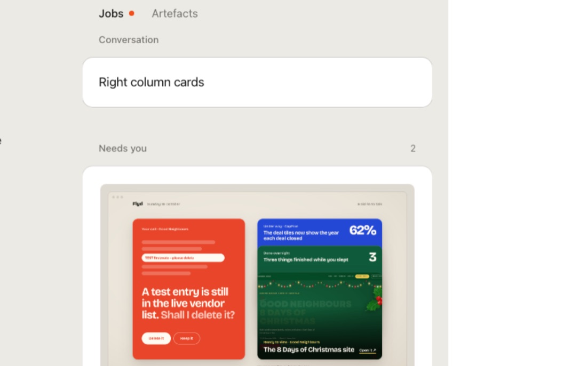
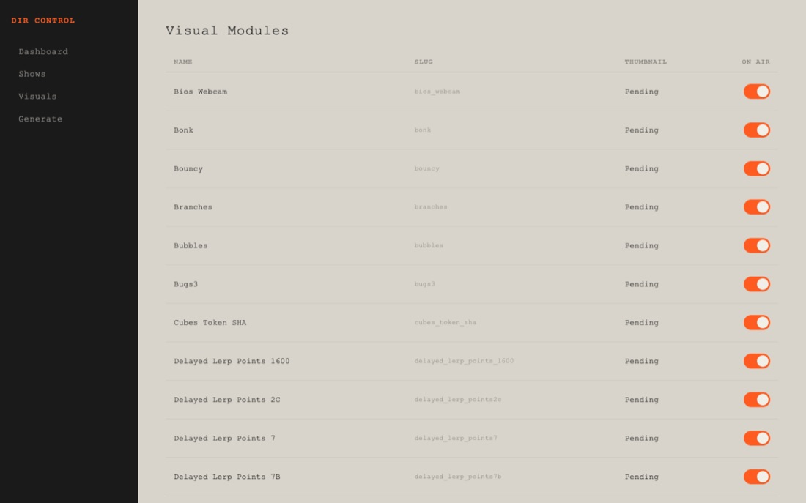

4 running6 need you

Which CapFive front‑page fixes ship?
Ten ranked fixes, most of them deletions. Firstmate would ship 1 to 6 as one pass. Asked 12:10.
Also waiting on you
- Pick search, pricing and credit pack designs · CleanX12:11
- Land the right-column cards, set as type · Flyd11:56
- Three calls on round 5 · CapFive11:51
- Land the ASCII artwork scenes · DIR10:59
- Notes on the V1 member dashboard · CapFiveWed
Running

Flyd: live work view 8 min
Caught Flyd saying nothing is running while four jobs run

DIR: a lighter admin 8 min
Photographed the schedule page before changing it

CleanX: five fixes 32 min
Photographed the inactive-accounts view and the empty queue

Easel: board mode 19 min
Made frames scroll inside the review board
Landed this morning

CleanX hero11:21

Flyd cards10:22

Flyd column09:51

DIR switches09:15